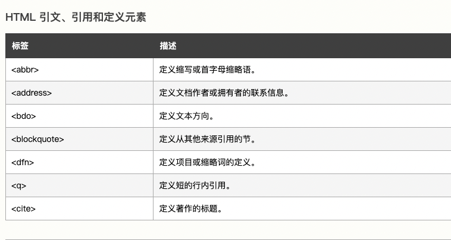
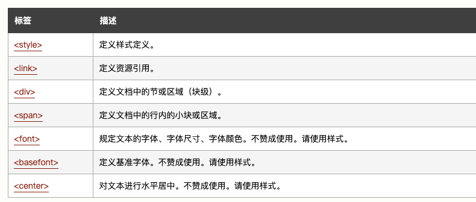
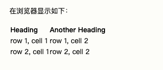
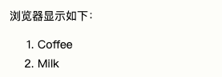
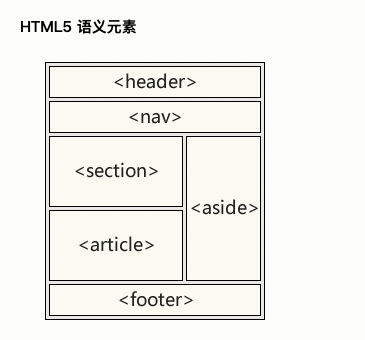
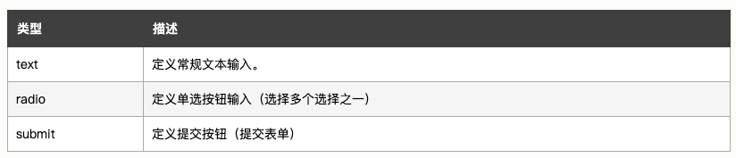
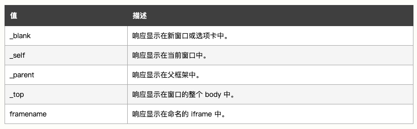
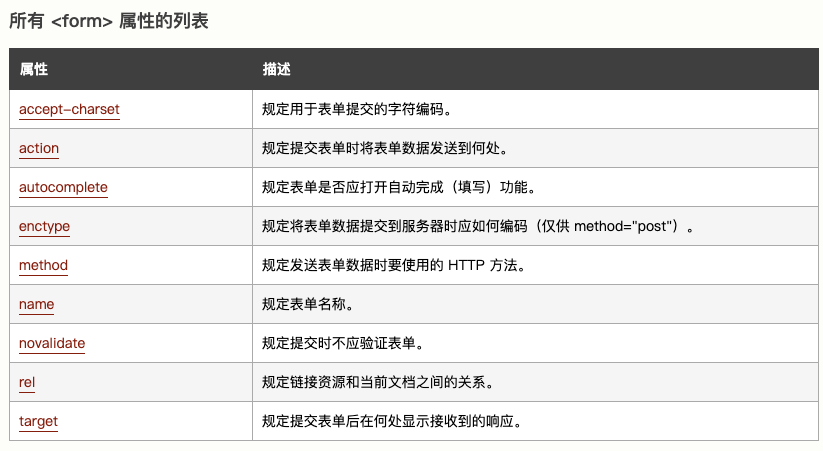

5. 常用HTML标签
1.1 HTML 标题
HTML 标题（Heading)
<h1>This is a heading</h1>
<h2>This is a heading</h2>
<h3>This is a heading</h3>
1.2 HTML 段落
HTML 段落是通过p标签进行定义的。
<p>This is a paragraph.</p>
<p>This is another paragraph.</p>
段落的分行
<p>This is<br />a para<br />graph with line breaks</p>
1.3 HTML 链接
HTML 链接是通过a标签进行定义的。
<a href="http://www.w3school.com.cn">This is a link</a>
-
target 属性
使用 Target 属性，你可以定义被链接的文档在何处显示。
下面的这行会在新窗口打开文档：
html <a href="http://www.w3school.com.cn/" target="_blank">Visit W3School!</a>target="_blank
1.4 图像
<img src="w3school.jpg" width="104" height="142" />
1.5 水平线
hr 元素可用于分隔内容。
<p>This is a paragraph</p>
<hr />
<p>This is a paragraph</p>
<hr />
<p>This is a paragraph</p>
1.6 引用
-
短引用
浏览器通常会为 q 元素包围引号。
html <p>WWF 的目标是：<q>构建人与自然和谐共存的世界。</q></p> -
长引用
html <p>以下内容引用自 WWF 的网站：</p> <blockquote cite="http://www.worldwildlife.org/who/index.html"> 五十年来，WWF 一直致力于保护自然界的未来。 世界领先的环保组织，WWF 工作于 100 个国家， 并得到美国一百二十万会员及全球近五百万会员的支持。 </blockquote>

2. HTML 属性
HTML 标签可以拥有属性。属性提供了有关 HTML 元素的更多的信息。
属性总是以名称/值对的形式出现，比如：name="value"。
属性总是在 HTML 元素的开始标签中规定。
链接的地址在 href 属性中指定
<a href="http://www.w3school.com.cn">This is a link</a>
适用于大多数 HTML 元素的属性:
| 属性 | 值 | detail |
|---|---|---|
| class | Classname | 类名 |
| id | id | 元素的唯一id |
| style | Style_definition | 行内样式（inline style） |
| title | Text | 元素的额外信息 |
3. HTML 样式
在css中，使用更多的样式来美化网站
HTML中引用的样式标签：

4. HTML 图像
在 HTML 中，图像由 <img>标签定义。
<img> 是空标签，意思是说，它只包含属性，并且没有闭合标签。
要在页面上显示图像，你需要使用源属性（src）。src 指 "source"。源属性的值是图像的 URL 地址。
定义图像的语法是：
<img src="url" />
-
替换文本属性（Alt）
alt 属性用来为图像定义一串预备的可替换的文本。替换文本属性的值是用户定义的。
html <img src="boat.gif" alt="Big Boat">当浏览器无法载入图像时，替换文本属性可告诉读者他们失去的信息。
此时，浏览器将显示这个替代性的文本而不是图像。
为页面上的图像都加上替换文本属性是个好习惯，这样有助于更好的显示信息，并且对于那些使用纯文本浏览器的人来说是非常有用的。
5. HTML 表格
-
表格由
<table>标签来定义。 -
每个表格均有若干行（由
<tr>标签定义），每行被分割为若干单元格（由<td>标签定义）。 -
字母 td 指表格数据（table data），即数据单元格的内容。
-
数据单元格可以包含文本、图片、列表、段落、表单、水平线、表格等等。
<table border="1">
<tr>
<td>row 1, cell 1</td>
<td>row 1, cell 2</td>
</tr>
<tr>
<td>row 2, cell 1</td>
<td>row 2, cell 2</td>
</tr>
</table>
-
表格和边框属性
html <table border="1"> <tr> <td>Row 1, cell 1</td> <td>Row 1, cell 2</td> </tr> </table> -
表格的表头
表格的表头使用
<th>标签进行定义。html <table border="1"> <tr> <th>Heading</th> <th>Another Heading</th> </tr> <tr> <td>row 1, cell 1</td> <td>row 1, cell 2</td> </tr> <tr> <td>row 2, cell 1</td> <td>row 2, cell 2</td> </tr> </table>
6. HTML 列表
HTML 支持有序、无序和定义列表
-
无序列表
无序列表是一个项目的列表，此列项目使用粗体圆点（典型的小黑圆圈）进行标记。
无序列表始于
<ul>标签。每个列表项始于<li>。html <ul> <li>Coffee</li> <li>Milk</li> </ul> -
有序列表
有序列表也是一列项目，列表项目使用数字进行标记。
有序列表始于
<ol>标签。每个列表项始于<li>标签。html <ol> <li>Coffee</li> <li>Milk</li> </ol>

-
定义列表
html <dl> <dt>Coffee</dt> <dd>Black hot drink</dd> <dt>Milk</dt> <dd>White cold drink</dd> </dl>
7. HTML div & span
可以通过 <div> 和 <span> 将 HTML 元素组合起来。
7.1 HTML 块元素
大多数 HTML 元素被定义为块级元素或内联元素。
块级元素在浏览器显示时，通常会以新行来开始（和结束）。
<h1>, <p>, <ul>, <table> 属于块级元素
7.2 HTML 内联元素
内联元素在显示时通常不会以新行开始。
<b>, <td>, <a>, <img>
7.3 HTML div
HTML div元素是块级元素，它是可用于组合其他 HTML 元素的容器。
Div 元素没有特定的含义。除此之外，由于它属于块级元素，浏览器会在其前后显示折行。
如果与 CSS 一同使用，div 元素可用于对大的内容块设置样式属性。
7.4 HTML span
HTML span 元素是内联元素，可用作文本的容器。
span 元素也没有特定的含义。
当与 CSS 一同使用时，span 元素可用于为部分文本设置样式属性。
8. HTML class
对 HTML 进行分类（设置类），使我们能够为元素的类定义 CSS 样式。
<!DOCTYPE html>
<html>
<head>
<style>
.cities {
background-color:black;
color:white;
margin:20px;
padding:20px;
}
</style>
</head>
<body>
<div class="cities">
<h2>London</h2>
<p>
London is the capital city of England.
It is the most populous city in the United Kingdom,
with a metropolitan area of over 13 million inhabitants.
</p>
</div>
</body>
</html>
<!DOCTYPE html>
<html>
<head>
<style>
.cities {
background-color:black;
color:white;
margin:20px;
padding:20px;
}
</style>
</head>
<body>
<div class="cities">
<h2>London</h2>
<p>London is the capital city of England.
It is the most populous city in the United Kingdom,
with a metropolitan area of over 13 million inhabitants.</p>
</div>
<div class="cities">
<h2>Paris</h2>
<p>Paris is the capital and most populous city of France.</p>
</div>
<div class="cities">
<h2>Tokyo</h2>
<p>Tokyo is the capital of Japan, the center of the Greater Tokyo Area,
and the most populous metropolitan area in the world.</p>
</div>
</body>
</html>
<!DOCTYPE html>
<html>
<head>
<style>
span.red {color:red;}
</style>
</head>
<body>
<h1>My <span class="red">Important</span> Heading</h1>
</body>
</html>
9. HTML id
HTML id属性为HTML中的元素指定唯一id
一个HTML文档中不能存在多个具有相同id的元素
- id属性用于指向样式表中的特定样式声明
- JavaScript 也可使用它来访问和操作拥有特定 ID 的元素。
9.1 id选择器的语法
写一个井号 (#)，后跟一个 id 名称。然后，在花括号 {} 中定义 CSS 属性。
<!DOCTYPE html>
<html>
<head>
<style>
#myHeader {
background-color: lightblue;
color: black;
padding: 40px;
text-align: center;
}
</style>
</head>
<body>
<h1 id="myHeader">My Header</h1>
</body>
</html>
10. HTML iframe 内联框架
iframe 用来在网页中嵌套显示网页
-
语法
html <iframe src="URL"></iframe> -
设置高度，宽度
html <iframe src="demo_iframe.htm" width="200" height="200"></iframe> -
删除边框
html <iframe src="demo_iframe.htm" frameborder="0"></iframe> -
使用iframe作为链接的目标
iframe 可用作链接的目标（target）
链接的 target 属性必须引用 iframe 的 name 属性：
html <iframe src="demo_iframe.htm" name="iframe_a"></iframe> <p><a href="http://www.w3school.com.cn" target="iframe_a">W3School.com.cn</a></p>
11. 嵌套 Javascript
script标签用于定义客户端 脚本
JavaScript 的常见用途是图像处理、表单验证和内容的动态更改。
- js更改内容
- js更改样式
- js更改属性
12. HTML 网页布局


<body>
<div id="header">
<h1>City Gallery</h1>
</div>
<div id="nav">
London<br>
Paris<br>
Tokyo<br>
</div>
<div id="section">
<h1>London</h1>
<p>
London is the capital city of England. It is the most populous city in the United Kingdom,
with a metropolitan area of over 13 million inhabitants.
</p>
<p>
Standing on the River Thames, London has been a major settlement for two millennia,
its history going back to its founding by the Romans, who named it Londinium.
</p>
</div>
<div id="footer">
Copyright W3School.com.cn
</div>
</body>
13. HTML 表单
HTML 表单用于搜集不同类型的用户输入。
13.1 表单格式
-
form表单
html <form> . form elements . </form> -
Input 元素 文本输入
input 元素有很多形态，根据不同的 type 属性。

-
input type="text"定义用于文本输入的单行输入字段
html <form> First name:<br> <input type="text" name="firstname"> <br> Last name:<br> <input type="text" name="lastname"> </form> -
input type="radio"定义单选按钮
html <form> <input type="radio" name="sex" value="male" checked>Male <br> <input type="radio" name="sex" value="female">Female </form>
13.2 表单提交
-
提交按钮
input type="submit"定义用于向表单处理程序（form-handler）提交表单的按钮
-
action属性
action属性定义在表单被提交时执行的动作，
如果action属性省略，action默认为当前页面的URL
-
method属性
method属性规定表单在提交时所使用的HTTP方法（GET/POST）
html <form action="action_page.php" method="GET"> <form action="action_page.php" method="POST"> -
name属性
如果要正确的被提交，每个字段必须设置一个name属性
14. HTML form属性
14.1 action属性
action属性定义提交表单时要执行的操作
当用户单击“提交”按钮时，表单数据将发送到服务器上的文件中
如果省略 action 属性，则将 action 设置为当前页面。
14.2 target属性
-
Target属性规定提交表单后在何处显示响应。
-
target属性可设置以下值之一

14.3 method属性
method 属性指定提交表单数据时要使用的 HTTP 方法。
-
表单数据可以作为 URL 变量（使用
method="get"） -
或作为 HTTP post 事务（使用
method="post"）发送。
关于GET请求
- 以名称/值对的形式将表单数据追加到 URL
- 永远不要使用 GET 发送敏感数据！
- URL 的长度受到限制（2048 个字符）
-
对于用户希望将结果添加为书签的表单提交很有用
-
GET 适用于非安全数据
关于POST请求
- 将表单数据附加在 HTTP 请求的正文中
- POST 没有大小限制，可用于发送大量数据。
14.4 autocompelete 属性
autocompelete属性规定表单是否应打开自动完成功能。
启用自动完成功能后，浏览器会根据用户之前输入的值自动填写值。
14.5 Novalidate 属性
Novalidate属性是一个布尔属性。
如果已设置，它规定提交时不应验证表单数据。
